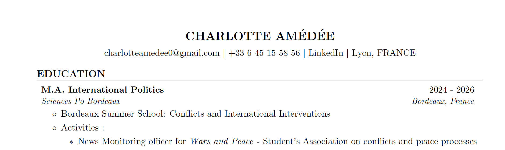
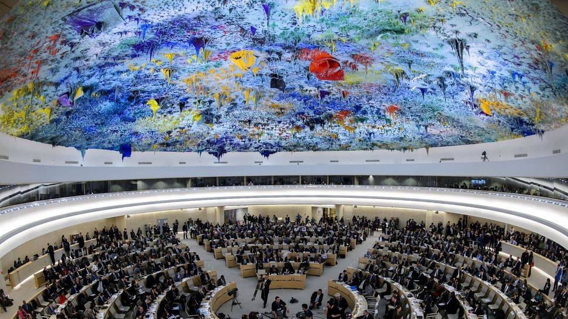
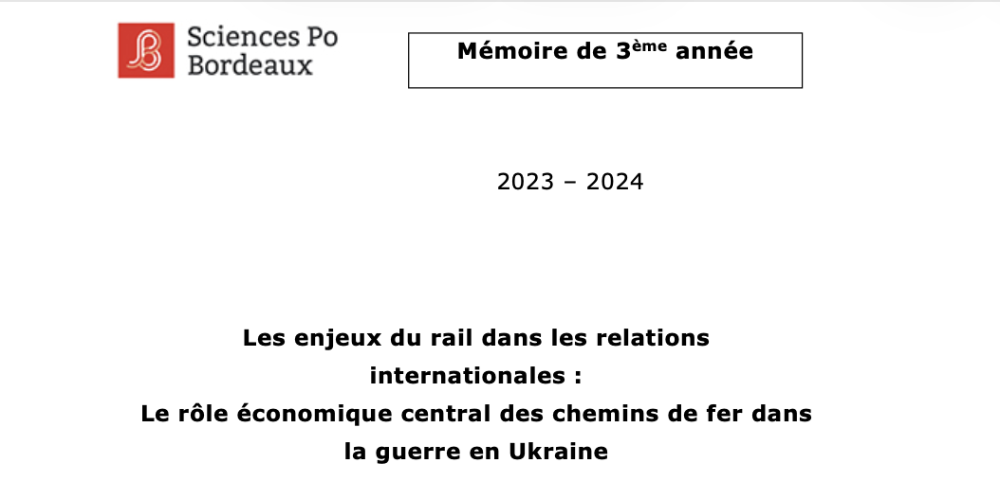
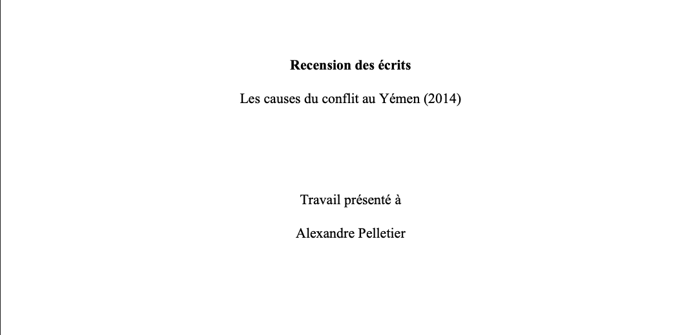
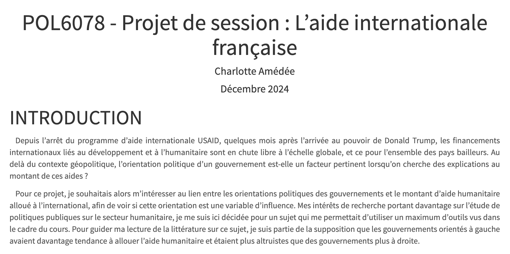
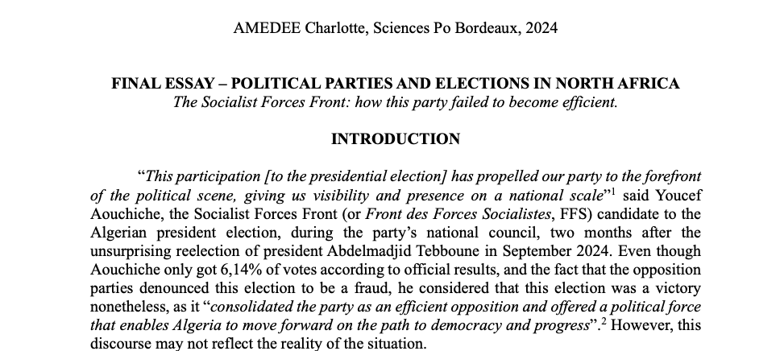

CHARLOTTE AMÉDÉE
Graduate in international politics.
Passionate about international politics, I completed my master's degree in International Politics at Sciences Po Bordeaux in 2026. My academic exchange in the Master's program in International Relations and Diplomacy at Laval University (Québec) allowed me to specialize in civil conflict analysis, acquire skills in both project management and international criminal law, and master key digital tools.
I completed my end-of-studies internship at the Political Chancery of the French Embassy in Windhoek, Namibia, where I applied my skills in both domestic and foreign policy analysis, as well as communications.
Finally, I have a particular interest in the study of civil and international conflicts , especially through the research and coursework I have conducted. I am now looking to deepen my understanding of governance issues in Africa.
Academic Achievements and Experience
Through my various extracurricular activities, I have been involved, either directly or indirectly, in issues related to peace and the study of international conflicts, in different ways.
Summer School
Participation in the Bordeaux Summer School on Conflicts and International Interventions .
Conflict Monitoring
News Monitoring on international conflicts and peace processes from the “Wars and Peace” association.
Bachelor's thesis
Research work on the economic key role of railroads in the war in Ukraine .
Negociating (MUN)
Simulated negotiations at the Sciences Po Bordeaux Model United Nations.
My resume
Below is an overview of my academic and extracurricular background.
My projects and research
Here is an overview of the essays and thesis I wrote during my studies at Sciences Po Bordeaux and Laval University.

Bachelor thesis - The Role of railroads in International Relations

Civil Conflicts Analysis - Literature review on the causes of the conflict in Yemen


Political parties and elections in North Africa : The Socialist Forces Front in Algeria.
Contact Me
You can contact me to discuss job opportunities or topics related to conflict analysis.